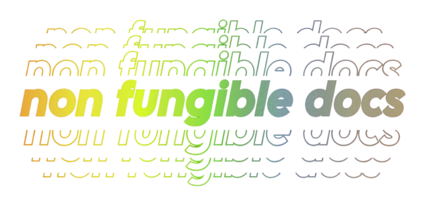
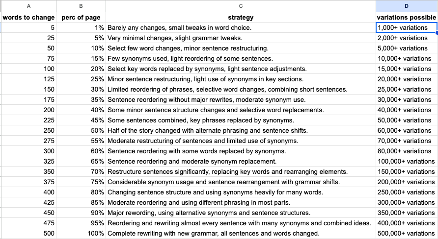
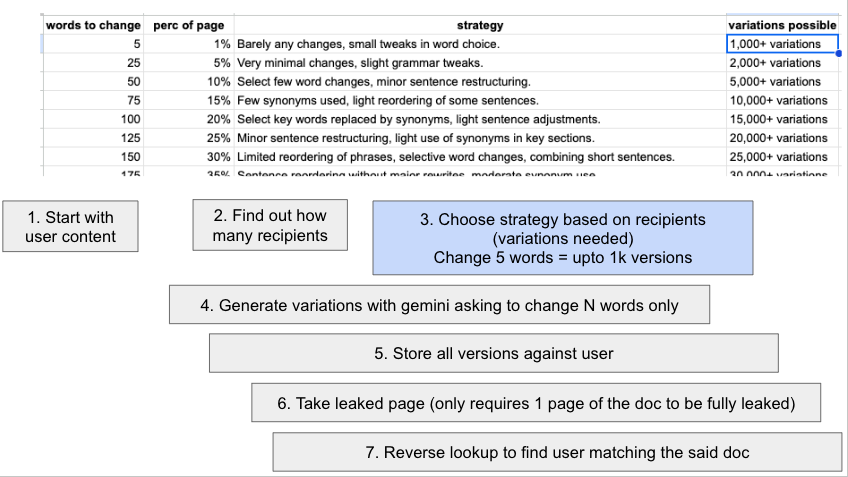

The state of Document Security
With over 1,800 data breaches in the U.S. in 2022 alone
Email data leaks present serious risks to companies, leading to financial loss, reputation harm, and legal issues.
scroll or press for more
Traditional methods
-
A page of the average document contains 500 words.
-
NDAs and basic encryption are inadequate in tracing the source of leaks.
-
Is there a better way?
scroll or press for more

scroll or press for more
Proposed
-
Uses multivariate tech and large language models (LLMs) to create unique document versions for each recipient
-
This technology allows to detect the source of the leak.
The average A4 document contains 500 words.
scroll or press for more
Documents need to be Confidential
Email data leaks present serious risks to companies, leading to financial loss, reputation harm, and legal issues.
Tracing the source of leaks
Traditional methods like NDAs and basic encryption are inadequate in tracing the source of leaks.
There is an urgent need for advanced solutions that can detect and prevent leaks proactively.
NLP, LLMs
The proposed AI-driven solution uses multivariate testing and large language models (LLMs) to create unique document versions for each employee, allowing for precise identification of leak sources. This technology allows to detect the source of the leak, thereby giving confidence to stakeholders of the repercussions of a leak, and is designed to start with documents and emails before expanding to other sensitive data.

scroll or press for more

scroll or press for more
Visit at https://nonfungibledocs.com/